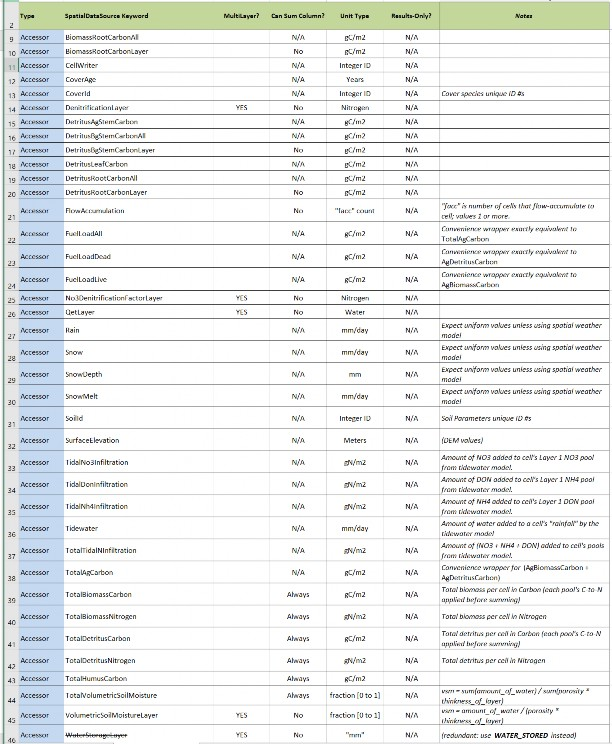
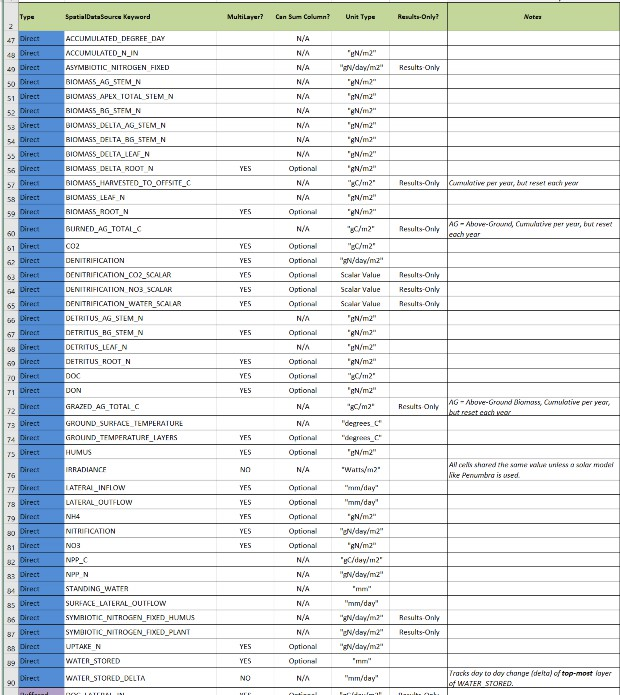
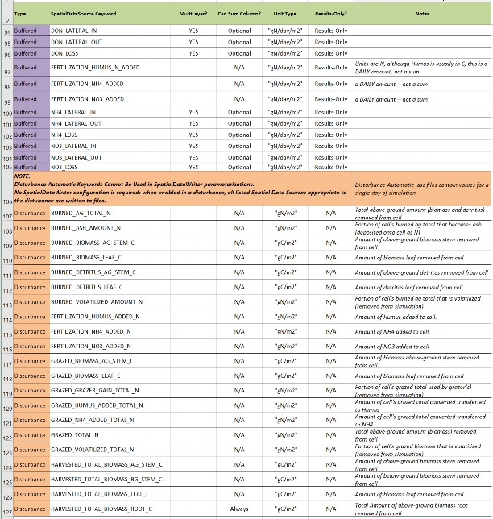

E.7 | Spatial Data Writer Key Words for Generating ASCII VELMA Outputs for Data Visualization
Overview (Tutorial E.7_Spatial Data Writer Key Words for ASCII Data Visualization)
The VELMA GUI can be used to set up spatial data writer keywords corresponding to specific hydrological and biogeochemical VELMA outputs. VELMA has a spatial data writer disturbance submodel that users can configure to produce ASCII output files (georeferenced grid cell arrays) that are saved to the VELMA results folder. See the VELMA 2.0 User Manual (McKane et al.
2014) for details on how to set up VELMA spatial data writer disturbances.
The purpose of the present tutorial (E.8) is to update available spatial data writer keywords that must be specified if a user wants VELMA to produce ASCII files for outputs of interest. After a simulation ends, the user can load the ASCII files into GIS-based data visualization tools such as ArcGIS or VISTAS (http://blogs.evergreen.edu/vistas/vistas-software/).
Note: The 2014 VELMA User Manual is downloadable from the EPA VELMA website: https://www.epa.gov/water-research/visualizing-ecosystem-land-management-assessments-velma- model-20
How to set up VELMA spatial data writers with user-specified keywords
Section 23.4 of the VELMA 2.0 User Manual (McKane et al. 2014) provides instructions for implementing spatial data writers in VELMA 2.0 or 2.1. This tutorial is limited to updating the "Table of Spatial Data Sources" (keywords) described in the 2014 User Manual.
Spatial Data Writer Keyword Data Types
There are four kinds of keyword data types that users can specify when configuring spatial data writer VELMA outputs. These codes appear in the first column of Figure 1.
- Accessor = Spatial Data that is not directly stored in a spatial data pool object
- Direct = Spatial Data that is directly stored in a spatial data pool object
- Disturbance = Spatial Data automatically written (when enabled) by disturbances.
- Buffered = Spatial Data directly stored in a spatial data pool object, but only when a SpatialDataWriter requires it.
Figure 1. Updated VELMA spatial data writer case sensitive keywords (enter exactly as shown)
Figure 1 (continued). Updated VELMA spatial data writer case sensitive keywords (enter exactly as shown)
Figure 1 (continued). Updated VELMA spatial data writer case sensitive keywords (enter exactly as shown)
